|
Shuyang Gu
Researcher Tencent Hunyuan Research Email: cientgu AT tencent dot com |
Biography
I am currently a Researcher in Tencent Hunyuan Research. Prior to this, I was a researcher in Visual Computing Group at Microsoft Research Asia (MSRA). I received my B.S. and Ph.D. degrees from University of Science and Technology of China (USTC) in 2017, 2022, supervised by Prof. Yong Wang and Prof. Baining Guo. I collaborate closely with Dong Chen, Fang Wen, and Jianmin Bao during my internship in MSRA.
My research interests mainly focus on generative models, especially the theory and practical applications of Visual Generation Models.
If you really want to do High-Quality research and looking for an internship, please contact me.
Selected Publications

|
Distribution Matching Variational AutoEncoder
Sen ye, Jianning Pei, Mengde Xu, Shuyang Gu†, Chunyu Wang, Liwei Wang, and Han Hu Arxiv Preprint [pdf] [code] |
|
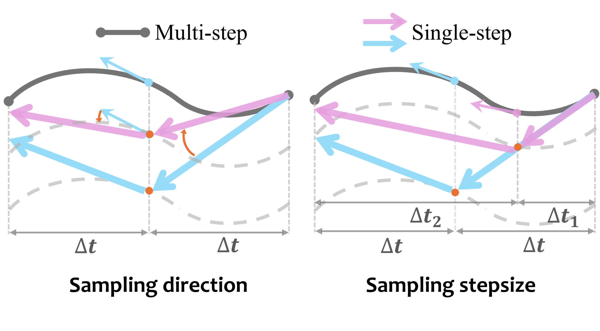
|
Optimal Stepsize for Diffusion Sampling
Jianning Pei, Han Hu, and Shuyang Gu† Arxiv Preprint [pdf] [code] |
|
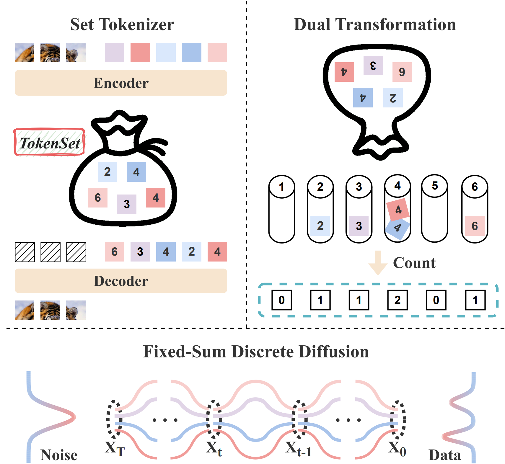
|
Tokenize Image as a Set
Zigang Geng, Mengde Xu, Han Hu, and Shuyang Gu† Arxiv Preprint [pdf] [code] |
|
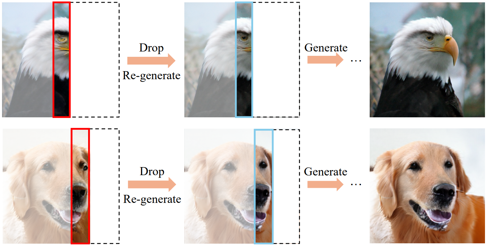
|
Equivariant Image Modeling
Ruixiao Dong, Mengde Xu, Zigang Geng, Li Li, Han Hu, and Shuyang Gu† Arxiv Preprint [pdf] [code] |
|
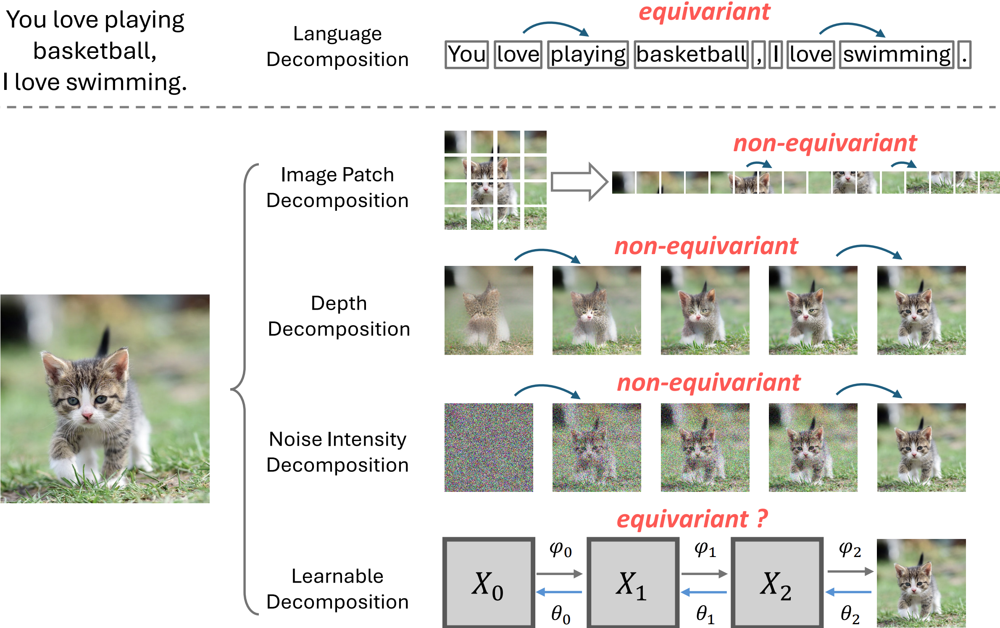
|
Several questions of Visual Generation in 2024
Shuyang Gu, Thoughts and Essays [pdf] |
|
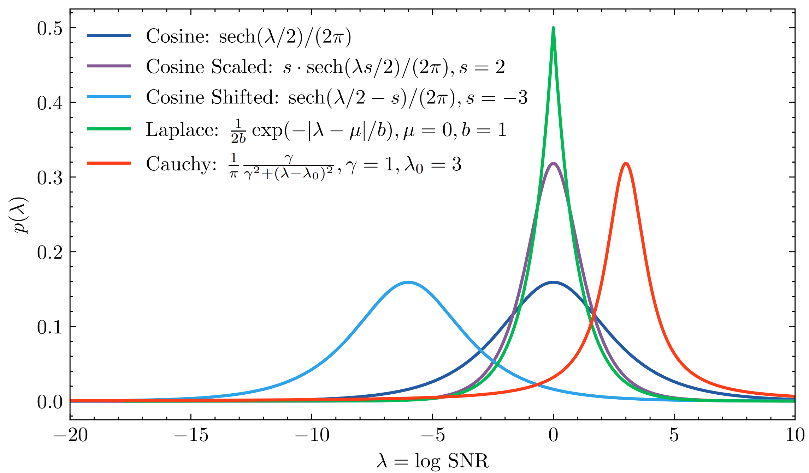
|
Improved Noise Schedule for diffusion training
Tiankai Hang, and Shuyang Gu International Conference on Computer Vision (ICCV), 2025 [pdf] |
|
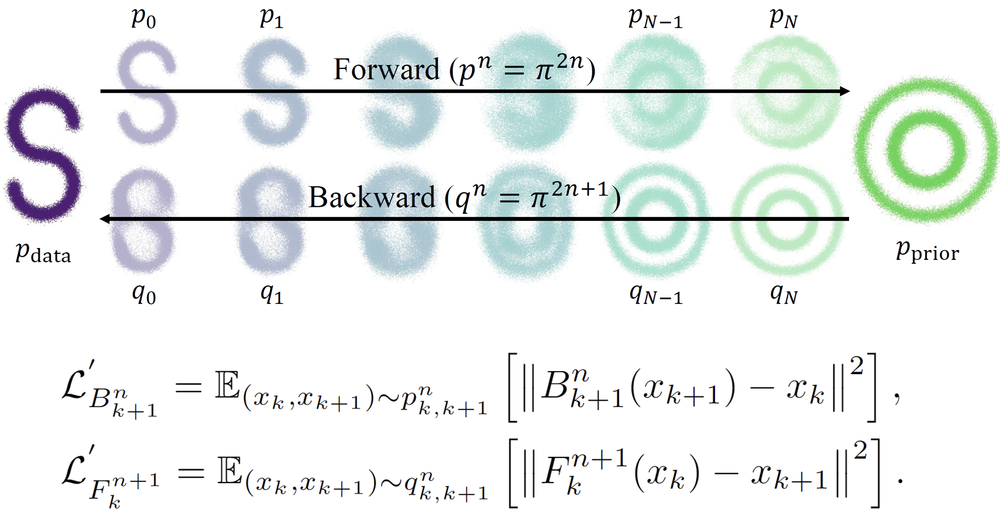
|
Simplified Diffusion Schrödinger Bridge
Zhicong Tang, Tiankai Hang, Shuyang Gu†, Dong Chen, and Baining Guo Arxiv Preprint [pdf] [code] |
|
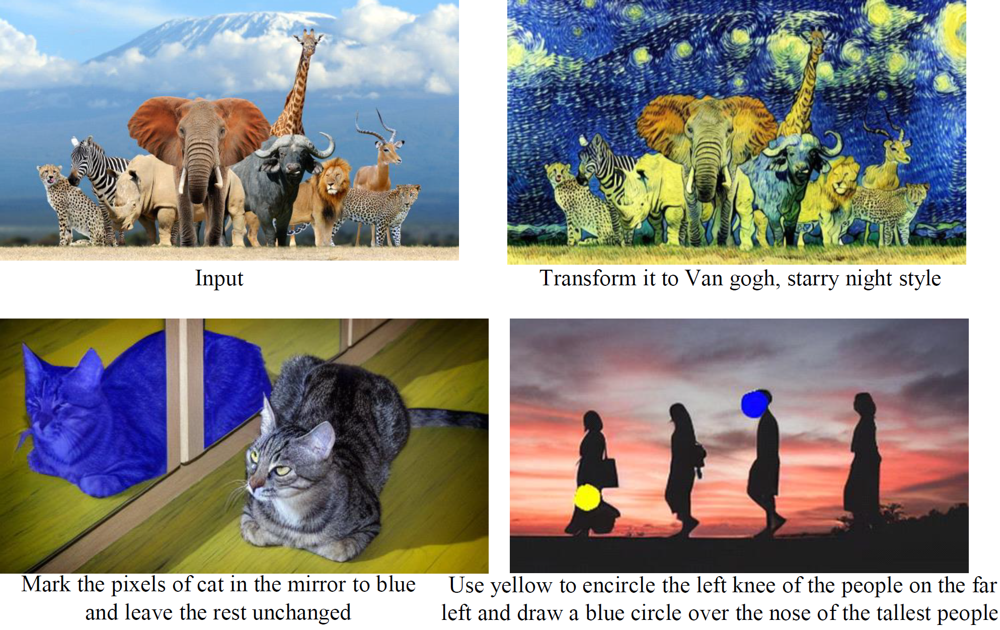
|
InstructDiffusion: A Generalist Modeling Interface for Vision Tasks
Zigang Geng, Binxin Yang, Tiankai Hang, Chen Li, Shuyang Gu†, Chen Li, Ting Zhang, Jianmin Bao, Zheng Zhang, Han Hu, Dong Chen, and Baining Guo Computer Vision and Pattern Recognition (CVPR), 2024 [pdf] [code] |
|
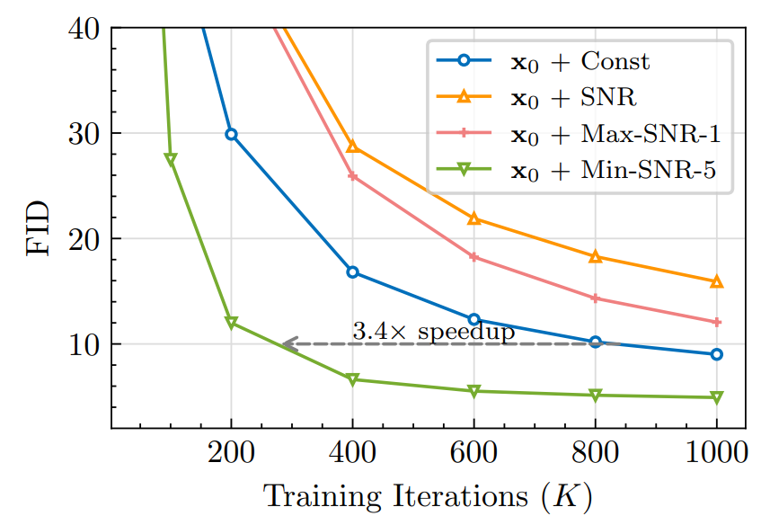
|
Efficient Diffusion Training via Min-SNR Weighting Strategy
Tiankai Hang, Shuyang Gu†, Chen Li, Jianmin Bao, Dong Chen, Han Hu, Xin Geng, and Baining Guo International Conference on Computer Vision (ICCV), 2023 [pdf] [code] |
|
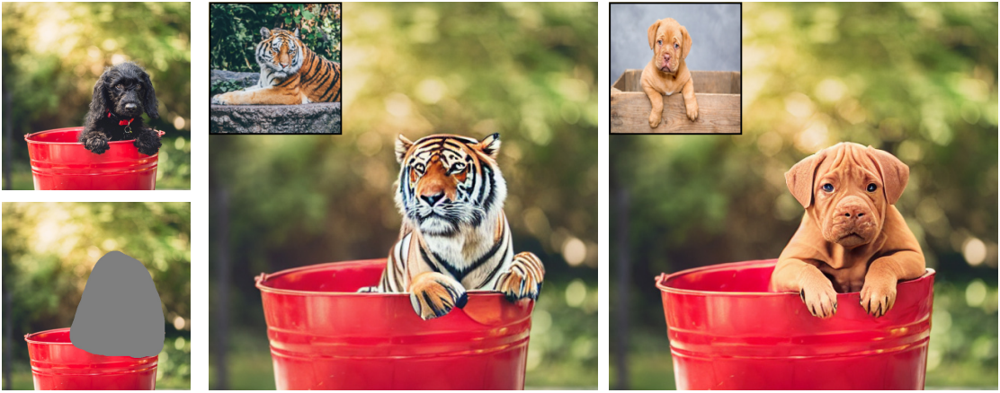
|
Paint by Example: Exemplar-based Image Editing with Diffusion Models
Binxin Yang, Shuyang Gu, Bo Zhang, Ting Zhang, Xuejin Chen, Xiaoyan Sun, Dong Chen, and Fang Wen Computer Vision and Pattern Recognition (CVPR), 2023 [pdf] [code] |
|
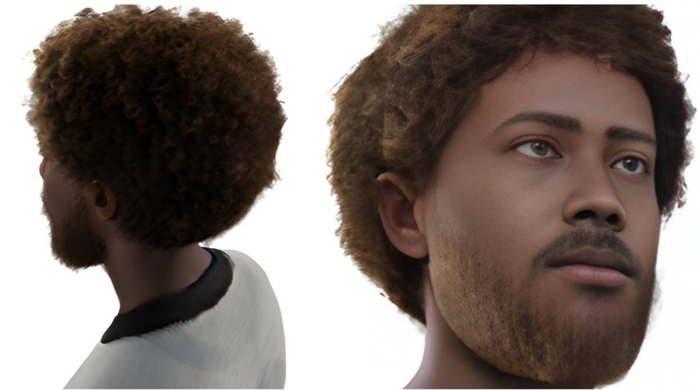
|
Rodin: A Generative Model for Sculpting 3D Digital Avatars Using Diffusion
Tengfei Wang, Bo Zhang, Ting Zhang, Shuyang Gu, Jianmin Bao, Tadas Baltrusaitis, Jingjing Shen, Dong Chen, Fang Wen, Qifeng Chen, and Baining Guo Computer Vision and Pattern Recognition (CVPR), 2023 [pdf] |
|
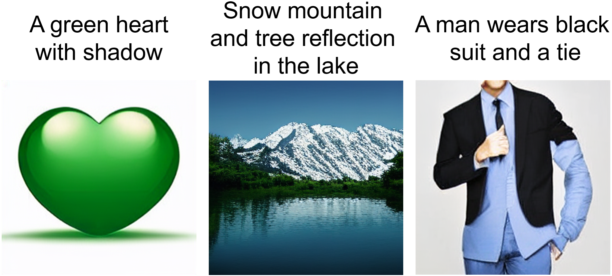
|
Vector Quantized Diffusion Model for Text-to-Image Synthesis
Shuyang Gu, Dong Chen, Jianmin Bao, Fang Wen, Bo Zhang, Dongdong Chen, Lu Yuan and Baining Guo Computer Vision and Pattern Recognition (CVPR), 2022 [pdf] [code] |

|
Improved Vector Quantized Diffusion Models
Zhicong Tang, Shuyang Gu, Jianmin Bao, Dong Chen, and Fang Wen Arxiv Preprint [pdf] [code] |
|
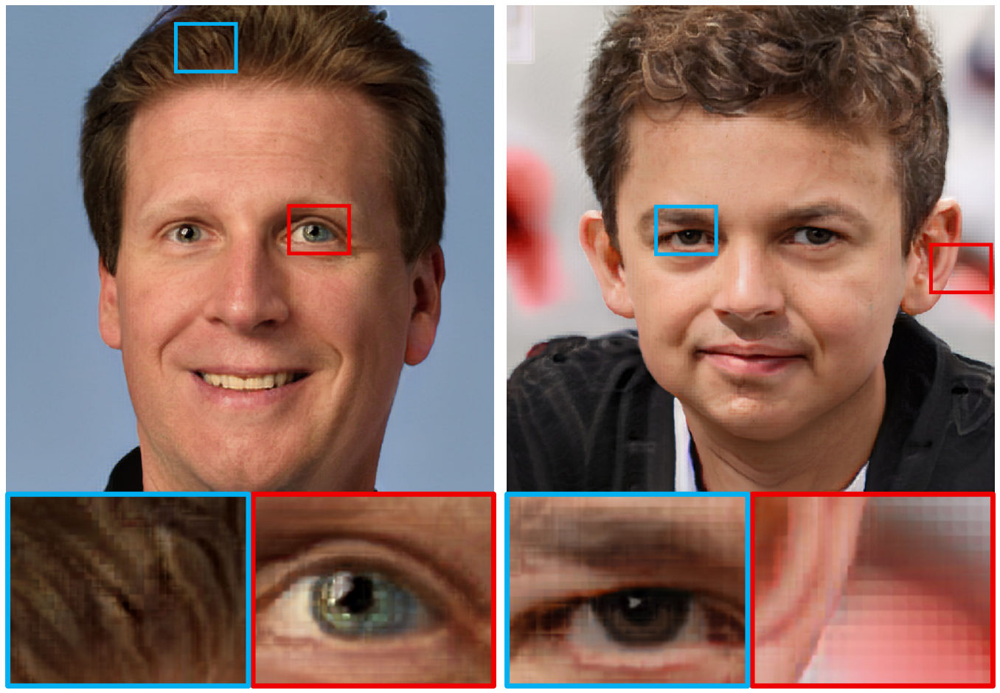
|
StyleSwin: Transformer-based GAN for High-resolution Image Generation
Bowen Zhang, Shuyang Gu, Bo Zhang, Jianmin Bao, Dong Chen, Fang Wen, Yong Wang, and Baining Guo Computer Vision and Pattern Recognition (CVPR), 2022 [pdf] [code] |
|
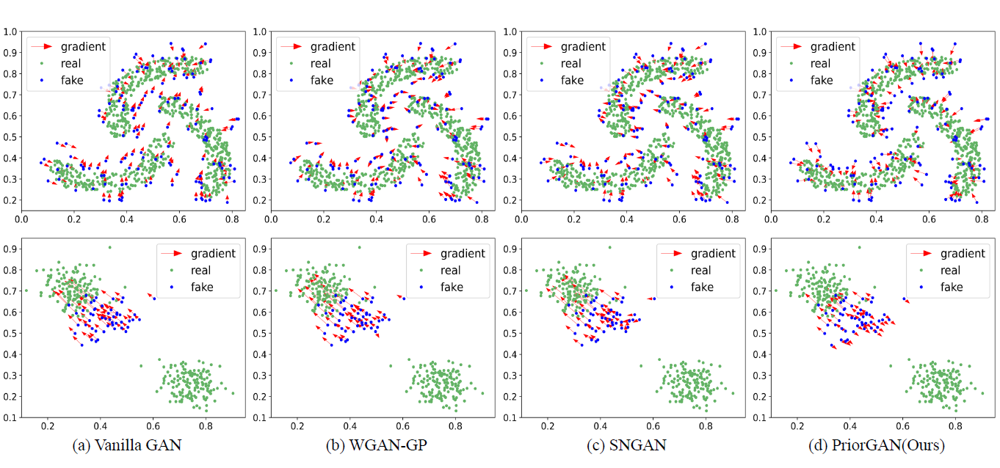
|
PriorGAN: Real Data Prior for Generative Adversarial Nets
Shuyang Gu, Jianmin Bao, Dong Chen, and Fang Wen Arxiv Preprint [pdf] |
|
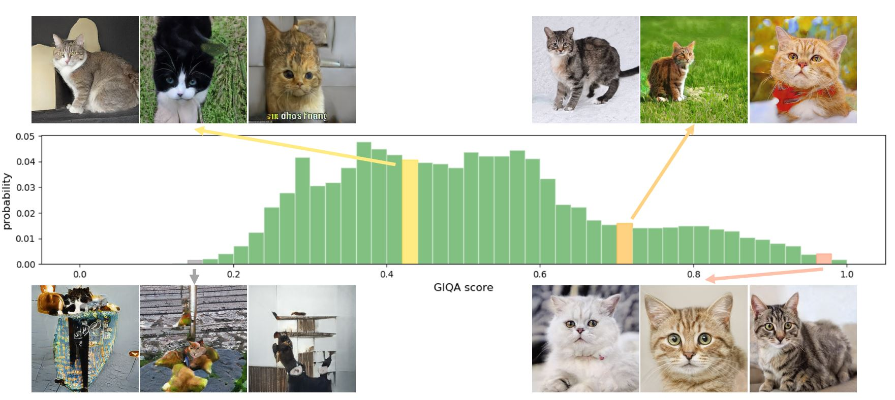
|
GIQA: Generated Image Quality Assessment
Shuyang Gu, Jianmin Bao, Dong Chen, and Fang Wen European Conference on Computer Vision(ECCV), 2020 [pdf] [code] |
|
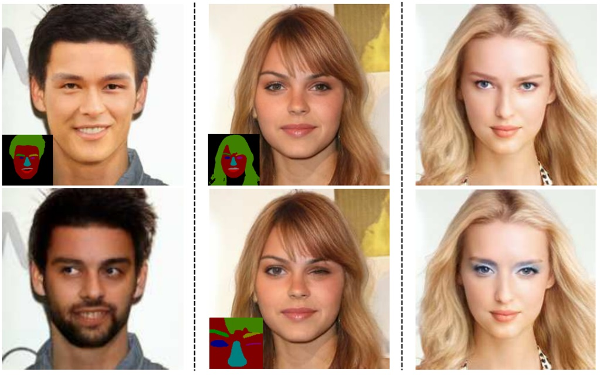
|
Mask-Guided Portrait Editing With Conditional GANs
Shuyang Gu, Jianmin Bao, Hao Yang, Dong Chen, Fang Wen, and Lu Yuan Computer Vision and Pattern Recognition (CVPR), 2019 [pdf] [code] |
|
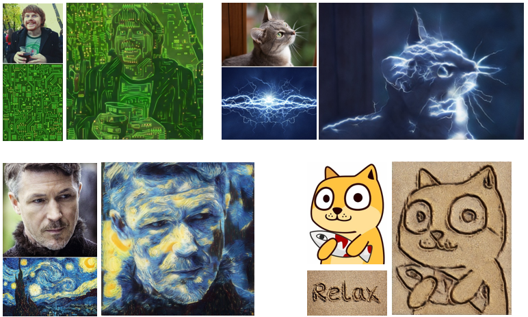
|
Arbitrary Style Transfer with Deep Feature Reshuffle
Shuyang Gu, Congliang Chen, Jing Liao, and Lu Yuan Computer Vision and Pattern Recognition (CVPR), 2018 [pdf] [code] |